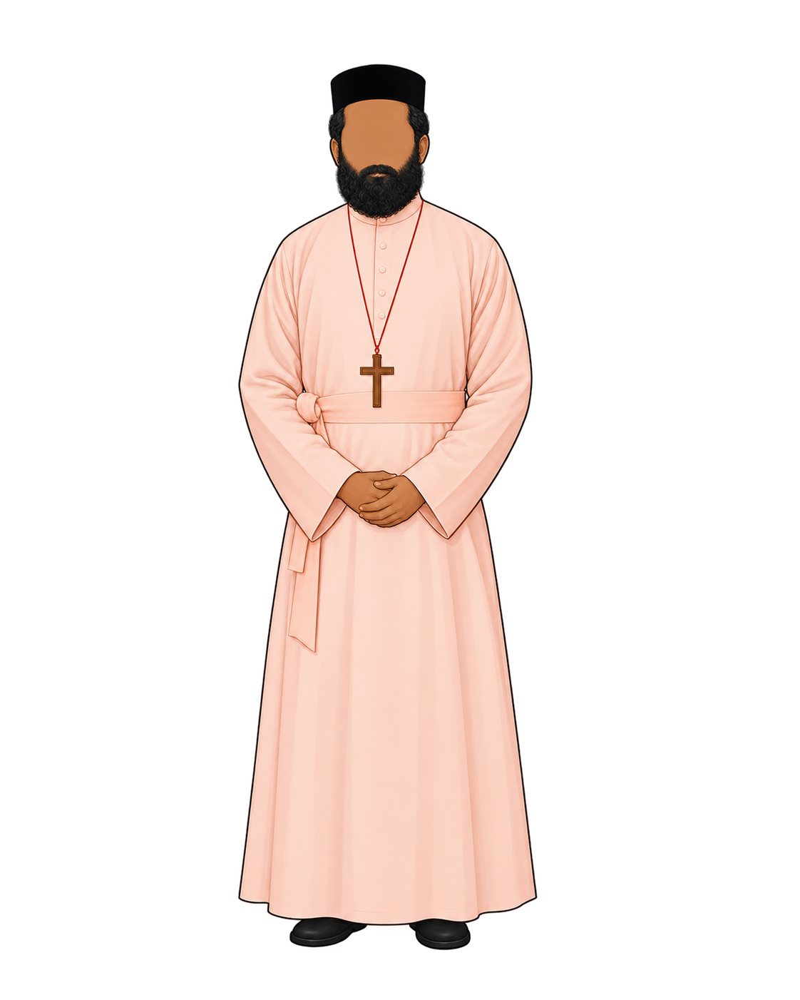

The bishops, rambans, priests, deacons, brothers and sadhus of the Church’s monasteries and ashrams, listed by monastic community.
Each monk is counted once for every community he is listed under, and those who are also bishops, rambans, priests or deacons appear on those pages as well.

A monk of the ashrams in the peach-coloured habit, cross at his breast.
Akhila Malankara Orthodox Sanyasa SamoohamPresident: H.G. Dr. Yakoob Mar IrenaiosCompiled with information kindly provided by Rev. Fr. Subin Sam, Secretary of the Akhila Malankara Orthodox Sanyasa Samooham.
Jyothis Ashram (Monastery of Epiphany), Kui, Abu Road, Sirohi District, Rajasthan 307026, India
1.Very Rev. Philipose Ramban
2.Rev. Fr. Geevarghese George
3.Br. Benson T. Saji
Attappadi St. Thomas Monastery (Nellipathy)
4
Community of St. Thomas, Attappady
Founder
H.H. Baselios Marthoma Didymos I
Established
1994
Superior
Very Rev. M.D. Yuhanon Ramban
Headquarters
St. Thomas Ashram, Nellipathy, Agali PO, Attappady
Institutions4
St. Thomas Mission Hospital, Attappady
St. Thomas Balabhavan, Attappady
St. Gregorios English Medium School, Attappady
Thayyalparisheelana Kendram
1.Very Rev. M.D. Yuhanon Ramban
2.Very Rev. Sudha Paul Ramban
3.Rev. Fr. Varghese Joseph
4.Rev. Fr. Varghese Mathew
Azhutha Mount Olive Monastery
5
Mount Olive Community
Founder
H.G. Zachariah Mar Severios
Established
2022
Superior
Very Rev. M.S. Yuhanon Ramban
Headquarters
Olivemala Ashram, Azhutha, Peermade, Idukki District
Institutions3
Paulose Mar Gregorios Study Centre
Parumala Mar Gregorios Retreat Centre
Church Library
1.Very Rev. M.S. Yuhanon Ramban
2.Rev. Fr. Nobin Philip
3.Rev. Fr. Zerapaul
4.Rev. Fr. John Samuel
5.Rev. Fr. Geevarghese (Santosh)
Bhilai St. Thomas Monastery
4
Community of St. Thomas, Bhilai
Founder
H.G. Stephanos Mar Theodosius
Established
1972
Superior
H.G. Alexios Mar Eusebius
Headquarters
St. Thomas Ashram, Post Blocks 24, Kailas Nagar, Bhilai, Durga District
1.H.G. Alexios Mar Eusebius
2.Very Rev. Geevarghese Ramban
3.Very Rev. Thomas Ramban
4.Rev. Fr. Aju K. Varghese
Chengamanad Bethlehem Monastery
22
Community of St. George
Founder
H.G. Mathews Mar Coorilos (H.H. Baselios Marthoma Mathews II)
Established
10 June 1960
Superior
Rev. Fr. Dr. K. Varghese
Headquarters
Bethlehem Ashram, Chengamanad PO, Kottarakkara
Institutions6
St. Gregorios College, Kottarakkara
Marthoma Mathews II Training College, Kottarakkara
MPMITC, Chengamanad
Mar Baselios English Medium School, Pulamon
Mar Baselios Marthoma Mathews II Balabhavan, Chengamanad
MGMEMUPS, Pattazhy
Branches4
St. Gregorios Mount Ashram, Kottarakkara
St. George Ashram, Chayalode
Bethel Ashram, Kuttikonam
Calvary Ashram, Pattazhy
1.Very Rev. A.J. Samuel Ramban
2.Very Rev. M.J. Joseph Ramban
3.Rev. Fr. Baby Thomas
4.Rev. Fr. Thomas Varghese
5.Rev. Fr. D. George
6.Rev. Fr. S.K. John
7.Rev. Fr. C.K. Geevarghese
8.Very Rev. Zachariah Ramban
9.Rev. Fr. J. Mathukutty
10.Very Rev. Mathews Ramban
11.Rev. Fr. Dr. K. Varghese
12.Rev. Fr. D. Mathew
13.Rev. Fr. Simon Lukose
14.Rev. Fr. John Varghese
15.Rev. Fr. Y. Mathew
16.Rev. Fr. M. Jacob
17.Rev. Fr. Thomas P. Cherian
18.Rev. Fr. Jacob Joy
19.Br. Kuriakose Thomas (Shiju)
20.Br. Geevarghese (Subin)
21.Br. Thomas Oommen (Anil)
22.Br. Daniel (Prince)
Kallada East Mount Carmel Monastery
2
Mount Carmel Community
Founder
H.H. Baselios Marthoma Mathews II
Established
1977
Superior
Rev. Fr. T.Y. Geevarghese
Headquarters
Mount Carmel Ashram, Mathilakom, East Kallada
Institutions2
Mount Carmel ITC
Mount Carmel English Medium School
1.Rev. Fr. T.Y. Geevarghese
2.Rev. Fr. K.C. John
Kandanad Carmel Monastery
3
Order of the Servants of the Holy Cross (SOC)
Founder
St. Dionysius of Vattasseril
Established
1919
Superior
Very Rev. Semavon Ramban
Headquarters
Carmel Dayara, Kandanad PO, Thiruvankulam
Institutions1
Shemavoon Vrudhabhavan, Kandanad
1.Very Rev. Semavon Ramban
2.Rev. Fr. P.M. John (Now at home)
3.Rev. Fr. John K. Samuel
Kandanad St. Gregorios Monastery
1
Community of St. Gregorios, Kandanad
Founder
Mother Susan Kuruvilla
Established
1973
Superior
Very Rev. Mathew Ramban
Headquarters
Mar Gregorios Ashram, Kandanad PO, Ernakulam District
1.Very Rev. Mathew Ramban
Karassery Bethel Monastery
4
Bethel Community
Founder
Rev. Fr. Jacob Daniel
Established
April 1991
Superior
Rev. Fr. Silin K. Nixon
Headquarters
M.G.M. Karunya Centre, Karassery, Thoothukudi District
Institutions3
Bethel Ashram, Puthencruz, Kaippattoor
Balabhavan
Karunya Centre
1.Rev. Fr. Silin K. Nixon
2.Rev. Fr. Johnson V.J.
3.Rev. Fr. Jain Daniel
4.Rev. Fr. Vineeth Abraham
Karukachal M.G.D. Monastery (Karunagiri)
12
St. Thomas Karuna Samooham
Founder
H.G. Geevarghese Mar Osthathios
Established
1983
Superior
H.G. Dr. Yuhanon Mar Chrisostomos
Headquarters
M.G.D. Ashram, Karunagiri, Karukachal
Institutions3
Karunagiri Balabhavan
Karunya Guidance Centre
Karunya Vishranti Bhavan
1.H.G. Dr. Yuhanon Mar Chrisostomos
2.Very Rev. Thomas John Ramban
3.Rev. Fr. Jinesh K. Varkey
4.Rev. Fr. Yuhanon
5.Rev. Fr. Johnson V.
6.Rev. Fr. Job Mathew
7.Rev. Fr. Mathaikutty V.
8.Rev. Dn. Varghese T.Y.
9.Rev. Dn. Samuel Samuel
10.Rev. Dn. Sobin Samuel
11.Br. Kurian P. Mathew
12.Br. Mathew
Kodanad Zion Monastery
1
Zion CommunityNo longer an active order
Founder
Very Rev. Augen Ramban (H.H. Baselios Augen I)
Established
1920s
Superior
Very Rev. Thomas Paul Ramban
Headquarters
Zion Ashram, Kodanad, Malayattoor, Ernakulam District
1.Very Rev. Thomas Paul Ramban
Mylapra St. Kuriakose Monastery
6
Community of St. Kuriakose, Mylapra
Founder
Very Rev. Mathews Ramban
Established
1974
Superior
Very Rev. Nathaniel Ramban
Headquarters
Mar Kuriakose Ashram, Kumbazha North, Pathanamthitta District
Institutions2
St. George Higher Secondary School, Attachakkal
Sankethabhavan Retreat Centre, Pathanamthitta
1.Very Rev. P.N. Paul Ramban
2.Rev. Fr. Samu George
3.Rev. Fr. Yuhanon John
4.Rev. Fr. E.T. Markose
5.Rev. Fr. P.Y. Jassan
6.Br. P.M. Skariah
Njaliankuzhy St. Basil Monastery
7
Community of St. Basil, Njaliankuzhy
Founder
H.G. Geevarghese Mar Ivanios
Established
1991
Superior
Very Rev. Mathai Ramban
Headquarters
Mar Baselios Dayara, Njaliyakuzhy, Vakathanam
1.H.G. Dr. Thomas Mar Ivanios
2.H.G. Dr. Geevarghese Mar Theophilos
3.Very Rev. Mathai Ramban
4.Very Rev. M.C. Kuriakose Ramban
5.Very Rev. Mathew K. John Ramban
6.Rev. Fr. George Philip
7.Rev. Fr. Zachariah Ninan
Othera St. George Monastery
7
Community of St. George, Othera
Founder
H.G. Puthenkavil Geevarghese Mar Philoxenos
Established
1944
Superior
Very Rev. Aprem Ramban
Headquarters
St. George Dayara, Othera
1.Very Rev. Aprem Ramban
2.Rev. Fr. Manu Varghese Jacob (Geevarghese)
3.Rev. Fr. Eby C. Philip (Abraham)
4.Rev. Fr. Biju N. Eapen (Paulose)
5.Rev. Dn. Tino (Samuel)
6.Rev. Dn. Sibin K. Nixon (Behanan)
7.Br. Jebin J. Joseph (John)
Pampady St. Kuriakose Monastery
1
Community of St. Kuriakose, Pampady
Founder
Kuriakose Mar Gregorios (Pampady Thirumeni)
Established
1913
Superior
Very Rev. Mathukutty Ramban
Headquarters
Mar Kuriakose Ashramam, Pothenpuram, Pampady
History
This monastery is one of the Church's pilgrim centres. Pampady Thirumeni and Paret Mar Ivanios are entombed here.
Institutions4
MGM Abhaya Bhavan
Mar Gregorios Balabhavan
CMM English Medium High School
Mar Ivanios ITC
1.Very Rev. Mathukutty Ramban
Pathanamthitta St. Basil Monastery
8
Society of Saint Basil (SSB)
Founder
H.G. Puthenkavil Geevarghese Mar Philoxenos
Established
1948
Superior
H.G. Kuriakose Mar Clemis
Headquarters
Mar Basil Dayara, Makkamkunnu P.O., Pathanamthitta District
1.H.G. Kuriakose Mar Clemis
2.H.G. Dr. Abraham Mar Seraphim
3.Rev. Fr. K.M. Thomas
4.Rev. Fr. Titus George
5.Rev. Fr. Wilson P. Abraham
6.Rev. Fr. Wilson Mathew
7.Rev. Dn. Koshy P. Joshua
8.Rev. Dn. George Varghese
Pathanapuram Mount Tabor Monastery
23
Order of the Sacred Transfiguration (OST)
Founder
H.G. Thoma Mar Dionysius
Established
1929
Superior
Very Rev. David Koshy Ramban
Headquarters
Mount Tabor Dayara, Pathanapuram, Kollam District
Institutions24
Mount Tabor Dayara, Pathanapuram
St. Stephen’s Dayara Chapel, Pathanapuram
Marthoma Dionysius Memorial, Pathanapuram
Mount Tabor Training College, Pathanapuram
Mount Tabor Training College Hostel for Women, Pathanapuram
St. Stephen’s Higher Secondary School
Mount Tabor Higher Secondary School
Mount Tabor LP School
St. Stephen’s Boarding School for Boys
St. Stephen’s College, Maloor
MTDM High School, Maloor
MTDM Eng. Med. Sch., Mylom
MTDM Balabhavan, Mylom
St. Thomas LPS, Amayannoor
MTDMHS, Thondernad
Catholicate HS School, Pothukal, Nilambur
PMSALP School, Ramankuth
Ponniah Higher Secondary School, Trichy
St. Mary’s EM LPS
St. Antony’s LPS
St. Mary’s Dayara Chapel
Mount Tabor Medical Mission Nursing School, Mathoor
St. Gregorios HSS, Mathoor
Mount Tabor Hospital, Mathoor
1.H.G. Dr. Yakoob Mar Irenaios
2.H.G. Dr. Joseph Mar Dionysius
3.Rev. Fr. K.A. Abraham
4.Very Rev. Elias Koshy Ramban
5.Very Rev. M.C. Mathews Ramban
6.Very Rev. Peter Thomas Ramban
7.Very Rev. Samuel Israel Ramban
8.Rev. Fr. Habeeb Joseph
9.Rev. Fr. Benjamin Mathen
10.Rev. Fr. K.V. Paul
11.Rev. Fr. Zachariah K. Abraham
12.Rev. Fr. Danaha Mathew
13.Rev. Fr. Markose Geevarghese
14.Rev. Fr. Dr. Mechael Zachariah
15.Rev. Fr. Philip Mathew
16.Rev. Fr. Issac Koruth
17.Rev. Fr. Yohannan Thomas
18.Rev. Fr. Job Kurian
19.Rev. Dn. Mathew (Bideesh Mathew)
20.Rev. Dn. Samuel K. (Sijo)
21.Rev. Dn. Thomas Varghese (Subin)
22.Br. Thomas Varghese (Shevil)
23.Br. Abraham T. Mathew
Powdikonam Mother Mary Monastery
5
Community of Mother Mary
Founder
H.G. Dr. Gabriel Mar Gregorios
Established
2006
Superior
H.G. Dr. Gabriel Mar Gregorios
Headquarters
Mathamariyam Ashramam, Nirmalagiri, Powdikonam, Thiruvananthapuram District
1.H.G. Dr. Gabriel Mar Gregorios
2.Rev. Fr. Abraham Thomas
3.Rev. Fr. Francis Mathai Vaidyan
4.Rev. Fr. Kuriakose George
5.Rev. Dn. Emil K. Koshy (Joshua)
Puthuppadi St. Paul’s Monastery
14
Society of the Missionaries of Christ (SMC)
Founder
H.G. Geevarghese Mar Osthathios
Established
1958
Superior
Very Rev. Phinahas Ramban
Headquarters
St. Paul’s Ashram, Puthuppady, Kozhikode District
Institutions2
St. Paul’s Ashram & Balagram, Kottayam
St. Gregorios Ashram & Balagram, Yacharam
1.H.G. Dr. Yuhanon Mar Thevodoros
2.Very Rev. Phinahas Ramban (Jacob Mathew)
3.Rev. Fr. Johnson P.K.
4.Rev. Fr. T.M. Yohannan
5.Rev. Fr. G. Thomaskutty
6.Rev. Fr. Paul Mathew
7.Rev. Fr. Joseph
8.Rev. Fr. Varghese Abraham
9.Rev. Fr. John Thomas (Sibi)
10.Rev. Fr. Thomas Varghese
11.Rev. Fr. A.D. Geevarghese (Prasad)
12.Rev. Fr. Santo Zachariah
13.Rev. Dn. John V. David
14.Br. Geevarghese (Arun Joy)
Ranni Holy Trinity Monastery
10
Society of the Mission Community of St. Thomas
Founder
H.G. Geevarghese Mar Dioscoros
Established
1970
Superior
Very Rev. K.T. Mathews Ramban
Headquarters
Holy Trinity Ashram, Angady, Ranni
1.H.G. Dr. Joshua Mar Nicodimos
2.Very Rev. K.T. Mathews Ramban
3.Rev. Fr. Rajan George (Jacob)
4.Rev. Fr. S. Philipose
5.Rev. Fr. K.P. Varghese
6.Rev. Fr. Abraham Mathai
7.Rev. Fr. Babu George
8.Rev. Fr. Daniel George (Reji)
9.Rev. Fr. Thomas P. Thomas
10.Rev. Dn. John Samuel
Ranni-Perunad Bethany Monastery
16
Order of the Imitation of Christ (OIC)
Founder
Rev. Fr. P. T. Geevarghese (founder of the Syro-Malankara Catholic Church) & Rev. Dn. Alexios (later H.G. Alexios Mar Theodosius)
Established
1918
Superior
Very Rev. Thomas Ramban
Headquarters
Bethany Ashram, Perunad, Ranni, Pathanamthitta District
Institutions7
Kunnamkulam St. Mary’s Nursery School
Kunnamkulam St. John’s Higher Secondary English Medium School
Kunnamkulam Blooming Buds Bethania C.B.S.E School
Kuzhimattom Visranthi Bhavan
Kuzhimattom Bethania Old Age Bhavan
Kuzhimattom Prathyasa Bhavan
Elappara Retreat Home
1.H.G. Mathews Mar Theodosius
2.Very Rev. Thomas Ramban
3.Very Rev. Joseph Ramban
4.Rev. Fr. Solomon
5.Rev. Fr. Geevarghese
6.Rev. Fr. Mathai
7.Rev. Fr. Skariah
8.Rev. Fr. Benjamin
9.Rev. Fr. Pathrose
10.Rev. Dn. Yohannan
11.Rev. Dn. Philipose
12.Rev. Dn. Iyyob
13.Sadhu Thomas
14.Sadhu Varghese
15.Sadhu Geevarghese
16.Sadhu Joseph
Roha Gregorian Ashram (Killa)
10
Community of St. Gregory
Founder
H.G. Dr. Geevarghese Mar Coorilos
Established
4 April 2022
Superior
Very Rev. Geevarghese Ramban
Headquarters
Gregorian Community Campus, At Killa, P.O. Dhatav, Tal. Roha, Dist. Raigad, Maharashtra, India
1.H.G. Dr. Geevarghese Mar Coorilos
2.Very Rev. Geevarghese Ramban
3.Rev. Fr. Paul Mathew
4.Rev. Fr. T.U. Thomas
5.Rev. Fr. Thomaskutty C.
6.Rev. Fr. Ashwin Fernandez
7.Rev. Fr. Joshy P. Jacob
8.Rev. Fr. Jobin Varghese
9.Rev. Fr. Alin Joseph Alex
10.Br. Shaiju Mathew
Sasthamcotta Mount Horeb Monastery
7
Mount Horeb Community
Founder
H.H. Baselios Marthoma Mathews II
Established
1991
Superior
Rev. Fr. George Cheriyan
Headquarters
Mount Horeb Ashram, Muthupilakkad PO, Sasthamcotta
1.H.G. Yakob Mar Elias
2.Very Rev. Geevarghese Ramban (Bishop-Elect)
3.Rev. Fr. K.T. Varghese
4.Rev. Fr. George Cheriyan
5.Rev. Fr. C. Daniel
6.Rev. Fr. Abraham M. Varghese (Abi)
7.Rev. Fr. K. Thomaskutty
South Piramadom Mar Augen Monastery
5
Community of Mar Augen, Piramadom
Founder
H.G. Mathews Mar Severios (H.H. Baselios Marthoma Mathews III)
Established
1999
Superior
H.H. Baselios Marthoma Mathews III
Headquarters
Mar Augen Ashram, Piramadom South PO, Pampakuda
1.H.H. Baselios Marthoma Mathews III
2.Very Rev. Yakob Ramban
3.Rev. Fr. Baiju John (Geevarghese John)
4.Rev. Fr. Jaise Mathew
5.Rev. Fr. Kuriakose Pukidiyil (Jithin)
Tehachapi St. Gregory the Theologian Monastery
1
Community of St. Gregory the Theologian, Tehachapi
Founder
H.G. Dr. Thomas Mar Ivanios
Established
14 September 2025
Superior
Rev. Fr. Samuel Varghese
Headquarters
20991 Old Town Rd, Tehachapi, CA 93561
1.Rev. Fr. Samuel Varghese
Thadagam Christa Sishya Monastery
8
Christa Sishya Community
Founder
Bishop Pakenham-Walsh
Established
1936
Superior
Rev. Fr. Mahesh Paul
Headquarters
C.S. Ashram, Thadagam, Coimbatore District
Institutions7
BWM Hospital
BWM School
Dr. Zachariah Mar Theophilos Memorial Palliative Care Unit
Bishop Walsh Vocational Training Centre
CS Ashram Camp Centre
Senior Citizens Retirement Homes
Bishop Walsh Memorial Retreat Centre
1.Very Rev. K.V. Yakob Ramban
2.Rev. Fr. Mahesh Paul
3.Rev. Fr. N.M. George
4.Rev. Fr. C.M. Zachariah
5.Rev. Fr. Geevarghese P. Abraham
6.Rev. Fr. Jibin Philip
7.Rev. Fr. Rijo Raju
8.Rev. Dn. Sheemon Varghese
Thannithode St. Antony’s Monastery
1
Community of St. Antony, ThannithodeUnder the control of Thumpamon Diocese
Founder
Rev. Fr. P. A. Samuel Panickatharayil
Established
Unknown
Superior
Very Rev. Yakoob Ramban Cor-Episcopa
Headquarters
St. Antony’s Ashram, Thannithode, Pathanamthitta District
1.Very Rev. Yakoob Ramban Cor-Episcopa
Vakathanam Vallikkattu St. Mary’s Monastery
2
Community of St. Mary, Vallikkattu
Founder
Very Rev. Karuchira Geevarghese Ramban (H.H. Baselios Geevarghese I)
Established
1905
Superior
Rev. Fr. Anish K. Sam
Headquarters
Vallikkattu Dayara, Puthenchantha, Vakathanam, Kottayam District
History
In 1868, Pulikkottil Mar Dionysius established a place of worship here. Kalappurackal Paulose Kathanar and Pazhayattukal Geevarghese led its construction, and Kalappurackal Kathanar also built a two-storied building for the church. When the Kathanar died in 1901, the chapel ceased to function. In 1905, St. Dionysius of Vattasseril appointed Karuchira Geevarghese Ramban to the chapel, and he grew it into a dayara. He became a metropolitan in 1913 and Catholicos in 1925, and died on 17 December 1928, being buried at the dayara that had served as his headquarters. Choorappadil K.C. Punnoose Achan was then appointed to the chapel. In 1982, H.H. Baselios Marthoma Mathews I renovated the dayara, and his secretary, Rev. Fr. P.K. Zachariah Peringode, was made its manager. He became Augen Ramban in 1992 and a bishop, Augen Mar Dionysius, on 5 March 2005. Through his perseverance the dayara became a pilgrim centre. P.J. Joseph Ramban was manager from 1 May 2005 to 1 January 2008, after Augen Mar Dionysius had passed away on 6 June 2007. On 1 January 2008, V. Rev. C.M. Philipose Ramban Cor-Episcopa became manager, and from 2012 Fr. Joy Varghese has served as manager.
1.Rev. Fr. Anish K. Sam
2.Rev. Fr. Joy Varghese
Vettickal St. Thomas Monastery & Pilgrim Centre
1
Community of St. Thomas, Vettickal
Founder
St. Gregorios of Parumala
Established
1877
Superior
Rev. Fr. Adv. Kuriakose George
Headquarters
St. Thomas Dayara, Vettickal, Mulanthuruthy
History
A cross was erected here on New Sunday in 1125 under the Mulanthuruthy Marthoman Church, and it can still be seen on the eastern wall of the monastery. A chapel was established here in 1200. In 1676, Mar Anthrayos stayed here before leaving for Kollam. Iype Metropolitan (the 9th Marthoma) consecrated the church in 1815, and Kattumangatt Ilaya Bava was entombed here in 1809. St. Gregorios of Parumala lived here from 1865 to 1876, and in 1877 he consecrated the dayara and its altar together with six other bishops. On 10 November 1976 the sacred relics of St. Gregorios were interred here, and the annual feast of St. Gregorios has been celebrated here ever since. The then Kandanad Diocesan Metropolitan, H.G. Joseph Mar Pachomios, renovated the monastery and made it his headquarters.